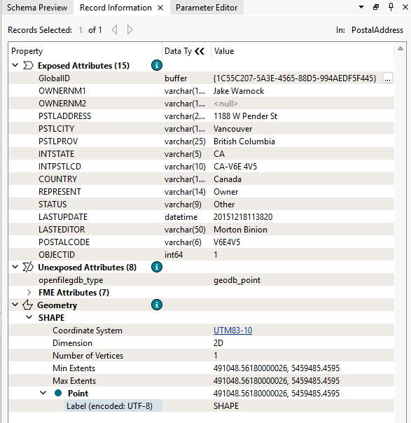
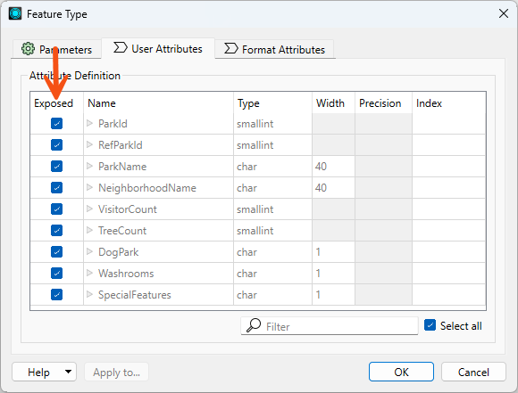
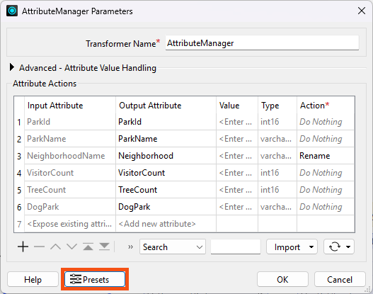

Learning Objectives
After completing this lesson, you'll be able to:
- Define user attributes.
- Define FME attributes.
- Distinguish between exposed and unexposed attributes.
- Identify why attributes might be renamed.
- Identify which transformer or transformers can be used for a particular attribute-managing task.
Instructions
In this lesson, you will:
- Scroll down to read the text below.
- Optional: You can view the video instead of reading the text. The video covers the text material.
- Complete the Quiz toward the bottom of the page.
- Optional: Let us know if you found this lesson relevant to your role by filling out the survey at the bottom of the page.
- Click 'Next' to mark the lesson complete.
Resources
- Starting workspace
- For Safe Software-hosted training courses, you can find this on your virtual machine here: C:\FMEData\Workspaces\TransformAttributes\attribute-managing-transformers.fmw
- Complete workspace
- C:\FMEData\Workspaces\TransformAttributes\attribute-managing-transformers-complete.fmw
- Addresses.gdb
- C:\FMEData\Data\Addresses\Addresses.gdb
- VancouverNeighborhoods.kml
- C:\FMEData\Data\Boundaries\VancouverNeighborhoods.kml
What Are Attributes?
FME Workbench supports two types of attributes:
User attributes are attributes that store a specific type of data about a record, such as a number, date, or piece of text. They might be called parcel_identifier, owner_name, or date_surveyed, for example. User attributes are always part of the record, regardless of the format they are stored in, and hence persist when translating from one format to another. User attributes may come from a source dataset or may be created as needed within FME. Not all formats support user attributes, and those that do sometimes impose restrictions on them. Each user attribute is defined by its name, data type, width, and number of decimal places. FME uses the term user attribute, whereas some relational databases might use column or field.
Format attributes are specific to a format's schema. Some examples are autocad_block_name and sde30_justification. FME does not generically support them and will change or be dropped when translated into a different format. In general, format attributes are designed for translations between the same format, although advanced users may find them helpful for writing to other formats when using customized workspaces.

Warning: Avoid naming user attributes with the prefix fme_. FME may not recognize a user attribute prefixed with fme_ because FME uses this prefix to process many format attributes. Also, avoid naming user attributes the same as other format attributes to avoid similar conflicts.
A particular set of format attributes has the prefix fme_. These attributes represent the data as it is perceived by FME and are known as FME attributes. Transformers often use these attributes; you will typically not set their values yourself. One common FME attribute worth knowing about is fme_feature_type, which stores the name of record's feature type.
User and format attributes are most visible when viewing a dataset in the Record Information window.

Exposed and Unexposed Attributes
In the feature type dialog of a reader or writer, attributes can be Exposed or made "visible."

Exposed attributes from a reader feature type become part of the workspace, which means you can access them in transformers and set them to particular values. By default, user attributes are exposed because, in most cases, you will be primarily interested in working with those attributes in a workspace. Format attributes are usually unexposed; however, for advanced users, exposing format attributes allows a variety of special things to be done with formats, such as setting line thickness, creating entities, and setting particular bits or bytes. For more information, see Controlling Records with Format Attributes.
In addition to format attributes, unexposed attributes can originate from dynamic workflows or when working with JSON or XML data. For example, this article in the FME Community discusses dealing with attributes unknown to the schema in a dynamic workflow. Some transformers, such as XMLFlattener, have settings to expose attributes.
When viewing attributes in the Record Information window, exposed attributes show their FME Data Types; unexposed attributes do not.
Learn more about how FME handles schema.
Manage Your Attributes
Many of the top 30 transformers are support transformers for managing attributes. These create new attributes, rename them, set values, and delete them.
An essential use for these transformers is to rename attributes for schema mapping.
The main attribute-management tasks and the transformers that can be used are as follows:
| Task |
Transformers |
| Create Attributes |
AttributeCreator, AttributeManager |
| Set Attribute Values |
AttributeCreator, AttributeManager |
| Remove Attributes |
AttributeKeeper, AttributeManager, AttributeRemover, BulkAttributeRemover |
| Rename Attributes |
AttributeManager, AttributeRenamer, BulkAttributeRenamer |
| Copy Attributes |
AttributeCopier, AttributeCreator, AttributeManager |
| Sort Attributes |
AttributeManager |
| Change Attribute Case |
BulkAttributeRenamer |
| Add Prefixes/Suffixes |
BulkAttributeRenamer |
Understand the BulkAttributeRenamer. It changes the case - or adds suffixes/prefixes - to the attribute name, not the attribute value.
Many of these transformers can carry out similar operations, and you can see that the AttributeManager does so many tasks you can use it almost exclusively.
However, it's important to note that the AttributeManager is a general-purpose tool. Using transformers with more specific functions, e.g., the AttributeRenamer, can boost performance. The only time AttributeManager tends to be faster than individual function attribute transformers is when you need to undertake many different attribute transformations in a row. Then, the AttributeManager is more performant.
Using transformers with more specific functions, like the AttributeRenamer instead of an AttributeManager to only do renaming, can also make your workspace easier to understand at a glance.
See this blog post by FME user Aurélien Chaumet for more information on attribute transformer performance.
The AttributeManager and AttributeCreator transformers let you manage the data types of your attributes. Check out this video to learn more.
Transformer Presets and Defaults
If you are a regular FME user, you may often apply the same parameter values to the same transformers, readers, or writers. For example, you may use the same password in a Joiner transformer or the same tolerance in a Snapper transformer. Presets allow you to save your own sets of parameter values so you can easily use them again and override the installed (FME) default values.
The Presets button on a transformer Parameters dialog allows you to create, load, update, and delete presets.

You can even set a preset to be the default value for a transformer.
Presets are associated with your operating system user profile, as are most FME Workbench settings. You can find and share your presets with other users, though note that sharing overwrites their existing presets. On Windows, you can find the presets at a path like this: C:\Users\{WINDOWS_USER}\AppData\Roaming\Safe Software\FME\defaults.db.
Exercise

City councilors have voted to amend noise control laws, and residents living in affected areas must be informed of these changes.
Jennifer has been tasked with finding the affected addresses. There's a tight deadline, and at least three city councilors are watching her work. The pressure is on, and it's up to her to deliver!
Jennifer knows that the address database for the city is stored in an Esri Geodatabase whose schema matches the Local Government Information Model PostalAddress table.
However, she was told that the software used to carry out automated bulk mailings requires addresses stored in an Excel spreadsheet using a completely different schema.
So, her first task is to plan out a workspace that converts addresses from Geodatabase to Excel, mapping the schema at the same time.
She would like to make several changes to the schema. She can conceptually group these changes into two approaches:
- Rule-based changes are changes that can be described using a predictable, repeatable pattern. These can usually be handled with FME transformers that select or modify attributes according to an explicit rule, such as a regular expression.
- Judgment-based changes require human interpretation or domain knowledge. These changes may not follow a pattern that can be clearly expressed in FME, so she can use transformers that allow her to manually select, rename, or modify attributes.
Here are the schema changes she needs to make:
- Remove several attributes following a rule
- Any attribute with a name containing the string "PST"
- Remove several attributes based on her judgement
- Choose specific attributes to remove where the number removed is much fewer than the number kept
- Rename one or more attributes based on her judgement
- Choose specific attributes to rename
- Rename several attributes following a rule
- Create an attribute with a fixed value
- Create an attribute with a constructed value and remove the component attributes afterward
1) Open Starting Workspace
- Start FME Workbench (2026.1 or later).
- Open the starting workspace (C:\FMEData\Workspaces\TransformAttributes\attribute-managing-transformers.fmw).
2) Place Transformers
- Place the transformers in the Transformer Options bookmark in the workspace based on their functionality.
- No need configure the transformers yet; we'll do that in later lessons.
- If you are unsure what each transformer does, refer to FME Help by double-clicking the transformer and then clicking the Help button to read how it works.
- Note that there are more transformers than you will need, and while you could accomplish some of the steps with multiple transformers, each one has a specific one in mind.
- If you think you can combine steps using an AttributeManager without changing the order of operations, feel free to do so.
- Note that Jennifer is removing attributes first. While it probably doesn't matter in this small workspace, performance will generally be better if you remove unnecessary records and attributes early in the workspace. We discuss this topic more in the Optimize Workspace Performance course.
Leave Us Feedback on This Lesson